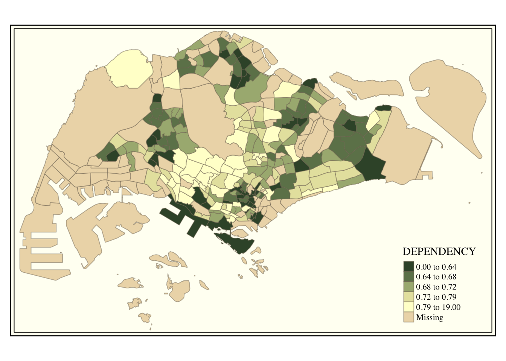
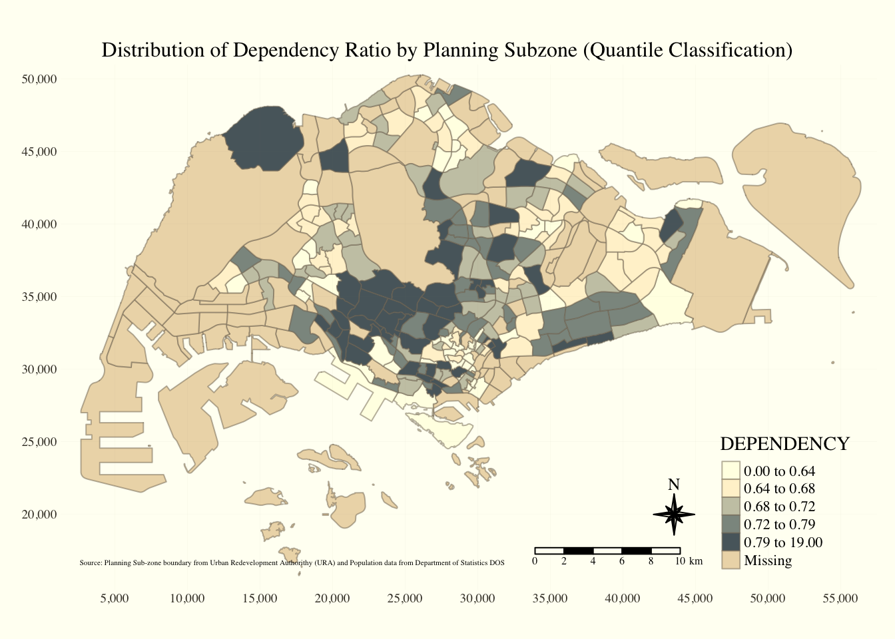

pacman::p_load(tmap, sf, tidyverse)Hands-on Exercise 2: Thematic Mapping and GeoVisualization with R
2.1 Overview
In this exercise, I will be demonstrating the use of R packages to create themed maps that are helpful to visualize geospatial data.
2.2 Data Acquisition
We will be using the following data:
Master Plan 2014 Subzone Boundary (Web) in ESRI shapefile format.
Source: data.gov.sg.
This is a geospatial data that based on URA Master Plan 2014, consisting of the geographical boundary of Singapore at the planning subzone level.
Singapore Residents by Planning Area / Subzone, Age Group, Sex and Type of Dwelling, June 2011-2020 in csv format
- Source: Department of Statistics, Singapore
2.3 Getting Started
In this exercise, our key to visualizing the data is to use the tmap package in R. Additionally, we would be using the following R packages to prepare the data:
readr for importing delimted text file,
tidyr for tidying data,
dplyr for wrangling data and
sf for handling geospatial data.
To do so, we use p_load() from the pacman package to load the packages.
2.3.1 Importing Geospatial Data into R
Next, we will import the MP14_SUBZONE_WEB_PL shapefile into R as a simple feature data frame called mpsz. Here, we use the st_read() from sf.
mpsz <- st_read(dsn = "data/geospatial",
layer = "MP14_SUBZONE_WEB_PL")Reading layer `MP14_SUBZONE_WEB_PL' from data source
`/Users/binhui-ong/IS415-GAA/Hands-on_Ex/Hands-on_Ex02/data/geospatial'
using driver `ESRI Shapefile'
Simple feature collection with 323 features and 15 fields
Geometry type: MULTIPOLYGON
Dimension: XY
Bounding box: xmin: 2667.538 ymin: 15748.72 xmax: 56396.44 ymax: 50256.33
Projected CRS: SVY21We can examine the content of mpsz with the following code chunk.:
mpsz Simple feature collection with 323 features and 15 fields
Geometry type: MULTIPOLYGON
Dimension: XY
Bounding box: xmin: 2667.538 ymin: 15748.72 xmax: 56396.44 ymax: 50256.33
Projected CRS: SVY21
First 10 features:
OBJECTID SUBZONE_NO SUBZONE_N SUBZONE_C CA_IND PLN_AREA_N
1 1 1 MARINA SOUTH MSSZ01 Y MARINA SOUTH
2 2 1 PEARL'S HILL OTSZ01 Y OUTRAM
3 3 3 BOAT QUAY SRSZ03 Y SINGAPORE RIVER
4 4 8 HENDERSON HILL BMSZ08 N BUKIT MERAH
5 5 3 REDHILL BMSZ03 N BUKIT MERAH
6 6 7 ALEXANDRA HILL BMSZ07 N BUKIT MERAH
7 7 9 BUKIT HO SWEE BMSZ09 N BUKIT MERAH
8 8 2 CLARKE QUAY SRSZ02 Y SINGAPORE RIVER
9 9 13 PASIR PANJANG 1 QTSZ13 N QUEENSTOWN
10 10 7 QUEENSWAY QTSZ07 N QUEENSTOWN
PLN_AREA_C REGION_N REGION_C INC_CRC FMEL_UPD_D X_ADDR
1 MS CENTRAL REGION CR 5ED7EB253F99252E 2014-12-05 31595.84
2 OT CENTRAL REGION CR 8C7149B9EB32EEFC 2014-12-05 28679.06
3 SR CENTRAL REGION CR C35FEFF02B13E0E5 2014-12-05 29654.96
4 BM CENTRAL REGION CR 3775D82C5DDBEFBD 2014-12-05 26782.83
5 BM CENTRAL REGION CR 85D9ABEF0A40678F 2014-12-05 26201.96
6 BM CENTRAL REGION CR 9D286521EF5E3B59 2014-12-05 25358.82
7 BM CENTRAL REGION CR 7839A8577144EFE2 2014-12-05 27680.06
8 SR CENTRAL REGION CR 48661DC0FBA09F7A 2014-12-05 29253.21
9 QT CENTRAL REGION CR 1F721290C421BFAB 2014-12-05 22077.34
10 QT CENTRAL REGION CR 3580D2AFFBEE914C 2014-12-05 24168.31
Y_ADDR SHAPE_Leng SHAPE_Area geometry
1 29220.19 5267.381 1630379.3 MULTIPOLYGON (((31495.56 30...
2 29782.05 3506.107 559816.2 MULTIPOLYGON (((29092.28 30...
3 29974.66 1740.926 160807.5 MULTIPOLYGON (((29932.33 29...
4 29933.77 3313.625 595428.9 MULTIPOLYGON (((27131.28 30...
5 30005.70 2825.594 387429.4 MULTIPOLYGON (((26451.03 30...
6 29991.38 4428.913 1030378.8 MULTIPOLYGON (((25899.7 297...
7 30230.86 3275.312 551732.0 MULTIPOLYGON (((27746.95 30...
8 30222.86 2208.619 290184.7 MULTIPOLYGON (((29351.26 29...
9 29893.78 6571.323 1084792.3 MULTIPOLYGON (((20996.49 30...
10 30104.18 3454.239 631644.3 MULTIPOLYGON (((24472.11 29...The code chunk allows us to have a quick understanding of the data by displaying only the first 10, out of 323, records.
2.3.2 Importing Attribute (Aspatial) Data into R
Next, we would be importing into the respopagesextod2011to2020.csv file into R.
We will use read_csv() from the readr package and save it as a data frame called popdata.
popdata <- read_csv("data/aspatial/respopagesextod2011to2020.csv")2.3.3 Data Preparation
In this exercise, we aim to use the attribute data that only has year 2020 values, with variables PA, SZ, YOUNG, ECONOMY ACTIVE, AGED, TOTAL, DEPENDENCY, where
YOUNG: age group 0 to 4 until age group 20 to 24,
ECONOMY ACTIVE: age group 25-29 until age group 60-64,
AGED: age group 65 and above,
TOTAL: all age group, and
DEPENDENCY: the ratio between young and aged against economy active group.
In the following two sub-sections, we will prepare the relevant attribute data, and combine it with the geospatial data to produce a new data frame for our map production.
2.3.3.1. Data wrangling
We will use the following data wrangling and transformation functions to extract the relevant data.
pivot_wider() of tidyr package, and mutate(), filter(), group_by()
select() of dplyr package
popdata2020 <- popdata %>%
filter(Time == 2020) %>%
group_by(PA, SZ, AG) %>%
summarise(`POP` = sum(`Pop`)) %>%
ungroup()%>%
pivot_wider(names_from=AG,
values_from=POP) %>%
mutate(YOUNG = rowSums(.[3:6])
+rowSums(.[14])) %>%
mutate(`ECONOMY ACTIVE` = rowSums(.[7:13])+
rowSums(.[15]))%>%
mutate(`AGED`=rowSums(.[16:21])) %>%
mutate(`TOTAL`=rowSums(.[3:21])) %>%
mutate(`DEPENDENCY` = (`YOUNG` + `AGED`)
/`ECONOMY ACTIVE`) %>%
select(`PA`, `SZ`, `YOUNG`,
`ECONOMY ACTIVE`, `AGED`,
`TOTAL`, `DEPENDENCY`)Next, before conducting the join, we must convert the values in PA and SZ fields in the attribute data to uppercase. This is because the fields are currently in a mix of upper- and lowercase, while in the geospatial data, SUBZONE_N and PLN_AREA_N are in uppercase.
popdata2020 <- popdata2020 |>
mutate_at(.vars= vars(`PA`, `SZ`), .funs = list(toupper))
popdata2020# A tibble: 332 × 7
PA SZ YOUNG `ECONOMY ACTIVE` AGED TOTAL DEPENDENCY
<chr> <chr> <dbl> <dbl> <dbl> <dbl> <dbl>
1 ANG MO KIO ANG MO KIO TOWN CEN… 1290 2760 760 4810 0.743
2 ANG MO KIO CHENG SAN 5640 16460 6050 28150 0.710
3 ANG MO KIO CHONG BOON 5100 15000 6470 26570 0.771
4 ANG MO KIO KEBUN BAHRU 4620 13010 5120 22750 0.749
5 ANG MO KIO SEMBAWANG HILLS 1880 3630 1310 6820 0.879
6 ANG MO KIO SHANGRI-LA 3330 9050 3610 15990 0.767
7 ANG MO KIO TAGORE 1940 4480 1530 7950 0.775
8 ANG MO KIO TOWNSVILLE 4190 11950 5100 21240 0.777
9 ANG MO KIO YIO CHU KANG 0 0 0 0 NaN
10 ANG MO KIO YIO CHU KANG EAST 1110 2410 750 4270 0.772
# ℹ 322 more rows2.3.3.2 Joining the geospatial and attribute data
Now, we are ready to combine the geospatial and attribute data! For this step, we use left_join() from the dplyr package to join the attribute data to the geographical data, using planning subzone name (i.e SUBZONE_N and SZ) as the common identifier.
mpsz_pop2020 <- left_join(mpsz,popdata2020, by = c("SUBZONE_N" = "SZ"))As the output follows the format of the left data frame in left_join, using mpsz as our left data table ensures that the output would also be a simple feature data frame.
Now that we are almost done with our data preparation, the last step is to save the data as a file in our directory for future use.
To do so, we must create a new folder “rds” in our directory. Thereafter, we apply the code chunk below.
write_rds(mpsz_pop2020,"data/rds/mpsz_popdata2020.rds")2.4 Choropleth Mapping Geospatial Data Using tmap
Choropleth mapping involves the symbolisation of enumeration units, such as countries, provinces, states, counties or census units, using area patterns or graduated colors.
For instance, a social scientist may need to use a choropleth map to portray the spatial distribution of aged population of Singapore by Master Plan 2014 Subzone Boundary.
To prepare a thematic map, we can use any of the following two approaches, each with its own pros:
Approach 1: Use qtm()
Pro: Plots a thematic map quickly
Con: Simpler and less customizable
Approach 2: Use tmap elements
Pro: Plots a highly customisable thematic map
Con: Requires more time and coding
2.4.1 Approach 1: Plot a choropleth map quickly using qtm()
This approach uses tmap to draw a choropleth map simply and quickly. It is concise and give a good default visualization in many cases.
tmap_mode("plot")
qtm(mpsz_pop2020, fill = "DEPENDENCY")
In the above code, tmap_mode() with “plot” input produces a static map. To produce an interactive map, we should use “view” input.
Additionally, the fill argument is used to map the attribute.
Nonetheless, this approach limits our ability to customize the map. To create a high quality cartographic choropleth map, we should use tmap’s drawing elements shown in the following Approach 2.
2.4.2 Approach 2: Creating a choropleth map using tmap’s elements
The second approach involves adding tmap’s elements layer by layer to create a high quality cartographic choropleth map like the one below. It also allows us to customize various details of the map such as fill and border transparency, and title position through options (such as “alpha=” for fill transparency) within the functions to best suit our aesthetic needs.
It is more complicated and lengthy, but definitely rewarding when we want a beautiful graph!
Steps
Step 1: Draw a base map
To begin, we would need to input the basic building block of tmap, which is tm_shape(). Thereafter, we add layers of elements such as tm_polygons() (or tm_fills() which will be shown later) to assign the target variable.
tm_shape(mpsz_pop2020) +
tm_polygons()
Step 2: Assigning target variable to tm_polygons()
Since our target variable is “DEPENDENCY”, we would assign it to tm_polygons(). It will create a map with borders within the map and fills to represent the target variable.
tm_shape(mpsz_pop2020) +
tm_polygons("DEPENDENCY")
Note: If we want to adjust the transparency of the borders or fills, we can do so with the border.alpha and alpha options respectively.
Alternative to tm_polygons(): tm_fills() and tm_borders()
In a case in which we do not want the borders within the map, we can use tm_fill() instead of tm_polygons.
tm_shape(mpsz_pop2020) +
tm_fill("DEPENDENCY")
Then, if we want to include the borders too, we can add a layer with tm_borders().
The combination of tm_fill() and tm_borders() would results in the same map as that with tm_polygons() in the first code chunk of this step (shown earlier on).
tm_shape(mpsz_pop2020) +
tm_fill("DEPENDENCY") +
tm_borders(col= "tomato", lwd = 0.2, alpha =0.8, lty = "dashed")The above is an example of how we made some adjustments to the appearance of the borders:
border color: “tomato”
border line width (lwd): 0.1
border transparency: 0.9 (where 0 = completely transparent and 1 = completely opaque)
border line type: dashed
2.4.3 Data classification methods of tmap
2.4.3.1 Plotting choropleth maps using built-in classification methods
Most choropleth maps use some methods of data classification to group a large number of observations into data ranges or classes.
tmap provides a total of ten data classification methods for our needs, namely: fixed, sd, equal, pretty (default), quantile, kmeans, hclust, bclust, fisher, jenks
To define a data classification method, the style option in tm_polygons() or tm_fill() can be applied.
In the following examples, I will be using tm_polygons() to exhibit how different data classifications and different number of classes can affect the maps produced.
Example 1: Different data classification with the same number of classes
Data classification with quantile data classification that uses 5 classes
tm_shape(mpsz_pop2020) +
tm_polygons("DEPENDENCY", style = "quantile", n=5)Data classification with equal data classification that uses 5 classes
tm_shape(mpsz_pop2020) +
tm_polygons("DEPENDENCY", style = "equal", n=5)From the maps generated by the two different data classification methods, we can see that the quantile data classification method produces a more evenly distribution compared to the equal data classification method, even though they have the same number of classes.
Example 2: Data classification with the same data classification, using different number of classes
Data classification with equal data classification that uses 4 classes
tm_shape(mpsz_pop2020) +
tm_polygons("DEPENDENCY", style = "equal", n=4)Data classification with equal data classification that uses 10 classes
tm_shape(mpsz_pop2020) +
tm_polygons("DEPENDENCY", style = "equal", n=10)From the maps generated by the two different number of classes, we can see that using 4 classes produces a more evenly distribution compared to using 10 classes, even though they employ the same data classification method.
In summary, it is important to note that our choice of data classification and classes can significantly affect the distribution in maps, which can in turn affect the reader’s insights drawn from the map, especially at first glance.
2.4.3.2 Plotting choropleth maps with customized breaks
For all built-in styles, the category breaks are computed internally. To set particular breaks, the breakpoints can be set explicitly using the “breaks=” argument in tm_polygons() or tm_fill().
It is important to note that in tmap, the breaks include minimum and maximum points. Hence, for n categories, we must have (n+1) elements in the “breaks=” option, in increasing order.
Before we begin, we should attain some descriptive statistics to get an idea of where we should set our break points. To compute the descriptive statistics of “DEPENDENCY” field, we apply the following code.
summary(mpsz_pop2020$DEPENDENCY) Min. 1st Qu. Median Mean 3rd Qu. Max. NA's
0.0000 0.6519 0.7025 0.7742 0.7645 19.0000 92 From the descriptive statistics, we can reasonably set break points at 0.60, 0.70, 0.80 and 0.90, and include our minimum point as 0 and maximum point as 100. The resulting breaks vector is c(0, 0.60, 0.70, 0.80, 0.90).
tm_shape(mpsz_pop2020) +
tm_polygons("DEPENDENCY", breaks = c(0, 0.60, 0.70, 0.80, 0.90)) As we can see, setting our own breaks has appeared to create a more meaningful representation of the distribution. Hence, when classifying data, we should compare this method with the built-in functions method (section 2.4.3.1) and employ the method that produces a more meaningful result.
2.4.4 Color Scheme
tmap supports color ramps defined by the user or a set of predefined color ramps from the RColorBrewer package.
2.4.4.1 Using ColorBrewer palette
To change the color, we assign the preferred color to the palette option of tm_polygons() or tm_fill(). For instance, in the code chunk below, we assign “Blues” to the palette argument tm_polygons.
tm_shape(mpsz_pop2020) +
tm_polygons("DEPENDENCY",
n=6,
style = "quantile",
palette = "Blues")To reverse the color shading, we add a “-” prefix to the color.
tm_shape(mpsz_pop2020) +
tm_polygons("DEPENDENCY",
n=6,
style = "quantile",
palette = "-Blues")2.4.5 Map Layouts
Map layout refers to the combination of all map elements into a cohesive map. Map elements include among others the objects to be mapped, the title, the scale bar, the compass, margins and aspects ratios. Color settings and data classification methods covered in the previous section related to the palette and break-points are used to affect how the map looks.
2.4.5.1 Map Legend
In tmap, several legend options are provided to change the placement, format and appearance of the legend.
tm_shape(mpsz_pop2020) +
tm_polygons("DEPENDENCY",
border.alpha = 0.5,
style = "jenks",
palette = "Blues",
legend.hist = TRUE,
legend.is.portrait = TRUE,
legend.hist.z = 0.1) +
tm_layout(main.title = "Distribution of Dependency Ratio by Planning Subzone (Jenks Classification)",
main.title.position = "center",
main.title.size = 1,
legend.height = 0.35,
legend.width = 0.35,
legend.outside = FALSE,
legend.position = c("right", "bottom"),
frame = FALSE)2.4.5.2 Map Style
tmap also allows a wide variety of layout settings to be adjusted. To do so, we can add tmap_style() to the code chunk.
For example, to use “classic” style in our map, we apply the following code.
tm_shape(mpsz_pop2020) +
tm_polygons("DEPENDENCY",
style = "quantile",
palette = "-Greens",
border.alpha = 0.5) +
tmap_style("classic")
2.4.5.3 Cartographic Furniture
In addition to map style, tmap also provides arguments to draw other map furniture such as compass, scale bar and grid lines.
In the code chunk below, tm_compass(), tm_scale_bar() and tm_grid() are used to add compass, scale bar and grid lines onto to choropleth map.
tm_shape(mpsz_pop2020) +
tm_polygons("DEPENDENCY",
border.alpha = 0.5,
style = "quantile",
palette = "Blues") +
tm_layout(main.title = "Distribution of Dependency Ratio by Planning Subzone (Quantile Classification)",
main.title.position = "center",
main.title.size = 1,
legend.height = 0.35,
legend.width = 0.35,
legend.outside = FALSE,
legend.position = c("right", "bottom"),
frame = FALSE) +
tm_compass(type="8star", size = 2) +
tm_scale_bar(width = 0.15) +
tm_grid(lwd = 0.1, alpha = 0.2) +
tm_credits("Source: Planning Sub-zone boundary from Urban Redevelopment Authorithy (URA) and Population data from Department of Statistics DOS",
position = c("left", "bottom"))
To reset the default style, we can use:
tmap_style("white")2.4.6 Drawing Small Multiple Choropleth Maps
Small multiple maps, also referred to as facet maps, are composed of many maps arranged side-by-side, and sometimes stacked vertically. They enable the visualization of how spatial relationships change with respect to another variable, such as time.
In tmap, small multiple maps can be plotted in three ways:
Approach 1: By assigning multiple values to at least one the aesthetic arguments
Approach 2: By defining a group-by variable in tm_facets(), and
Approach 3: By creating multiple stand-alone maps with tmap_arrange().
2.4.6.1 Approach 1 ; Assign muliple values to at least one of the aesthetic arguments
Example 1a: In this example, small multiple choropleth maps are created by defining ncols in tm_polygons().
tm_shape(mpsz_pop2020) +
tm_polygons(c("YOUNG", "AGED"),
style = "equal",
palette = "Blues",
border.alpha = 0.5) +
tm_layout(legend.position = c("right", "bottom"),
) +
tmap_style("white")Example 1b: In this example, small multiple choropleth maps are created by assigning multiple values to at least one of the aesthetic arguments.
tm_shape(mpsz_pop2020) +
tm_polygons(c("DEPENDENCY", "AGED"),
style = c("equal", "quantile"),
palette = list("Blues", "Greens")) +
tm_layout(legend.position=c("right", "bottom"))2.4.6.2 Approach 2: Define a group-by variable in tm_facets
Example 2: In this example, multiple small choropleth maps are created using tm_facets().
tm_shape(mpsz_pop2020) +
tm_polygons("DEPENDENCY",
style = "quantile",
palette = "Blues",
thres.poly = 0,
border.alpha = 0.5) +
tm_facets(by = "REGION_N",
free.coords = TRUE,
drop.units = TRUE) +
tm_layout(legend.show = FALSE,
title.position = c("center", "center"),
title.size = 20)2.4.6.3 Approach 3: Create multiple stand-alone maps with tmap_arrange()
In this approach, we create different maps and combine them together with tmap_arrange(), in which we can customize how we want to arrange them using the ncol option.
youngmap <- tm_shape(mpsz_pop2020) +
tm_polygons("YOUNG",
style = "quantile",
palette = "Blues")
agedmap <- tm_shape(mpsz_pop2020) +
tm_polygons("AGED",
style = "quantile",
palette = "Blues")
tmap_arrange(youngmap, agedmap, asp = 1 ,ncol = 2)2.4.7 Mapping Spatial Object Meeting a Selection Criterion
Instead of creating small multiple choropleth map, you can also use selection function to map spatial objects that meet the selection criterion.
For example, if we want to map the “DEPENDENCY” distribution only for the “CENTRAL REGION” of Singapore, we can apply the following code.
tm_shape(mpsz_pop2020[mpsz_pop2020$REGION_N=="CENTRAL REGION",])+
tm_polygons("DEPENDENCY",
style = "quantile",
palette = "Blues",
legend.hist = TRUE,
legend.is.portrait = TRUE,
legend.histz = 0.1,
border.alpha = 0.5) +
tm_layout(legend.outside = TRUE,
legend.height = 0.35,
legend.width = 5.0,
legend.position = c("right", "bottom"),
frame = FALSE)2.5 References
2.5.1 tmap package
2.5.2 Geospatial data wrangling
2.5.3 Data wrangling
With the guide of Professor Kam Tin Seong.